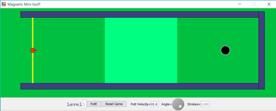

Welcome to Magnetic Mini Golf!

This program allows a player to play a version of Putt Putt with a twist: the ball behaves like a point charge in that it responds to magnetic fields. This game has two levels: regular and challenge. For the first level, the first magnetic field is placed in the lighter green region seen from the overhead view. The field is aimed into the ground (or screen). This causes the charged ball to veer in either a counterclockwise or clockwise direction depending on the direction of its approach to the field. The ball obeys the right hand rule, such that it will travel in a clockwise motion when approaching from the left and counterclockwise from the right. Level two adds a teal magnetic field in the opposite direction.
The ball's motion is also affected by friction with the green. This inhibited acceleration causes the ball to slow and eventually stop, as normal golf balls are wont to do.
The rules are simple. Putt the ball in the hole in as few strokes as possible!
Players may change a few factors, the velocity of the putt, the direction of the ball, and the original ball placement, in order to accomplish this goal. The velocity is controlled by the input field, and the angle by the dial. Enter must be pressed after changing the velocity. Both of these variables, however, can also be manipulated by the hot spot on the tip of the arrow after the first shot. (I prefered that players use the panel elements at least once.)
Once the player has selected the parameters, they can press the Putt button to hit the ball. There is a reset button in case things go too awry in a particular round.
The counter in the bottom right corner keeps track of the number of strokes. Note that if the ball leaves the green, the player will incur a penalty stroke!